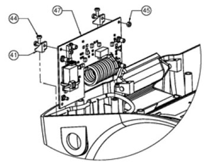
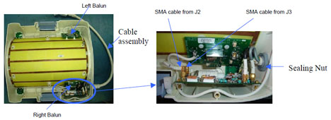

Operating Documentation
Direction 5500113, Rev# 3
Discovery MR450 1.5T Service Methods
Module Version 3.0, Version Date 5/18/09
Operating Documentation |
| Required Persons | Procedure Timing |
| 1 | 30 minutes |
This document contains replacement procedures and lists the field replaceable units (FRUs) for the 1.5T Split Top Head Coil. Go to Section 4 to follow the procedure to replace the external cable and mechanical hardware of the coil. Refer to 1.5T Split Top Head Coil FRUs for a list of the coil FRUs and other accessories.
Standard Tool Kit
QHTR Board, 5328732
Remove the head coil top from the head coil bottom.
From the head coil bottom, unscrew 5 brass screws (diagram no. 43) and 9 nylon screws (diagram no. 33) with nylon washers (diagram no. 36) (see Illustration 1).
Illustration 1: 1.5T Split Top Head Coil - Bottom

Remove the head coil bottom cover plate from the bottom side of the head coil.
Unscrew the 2 M3X8 screws (diagram no. 44) of the 1.5T Head coil QHTR Board fixed on the head coil bottom (see Illustration 2).
Lift the QHTR Board (diagram no. 47), hold it outside the coil and disconnect the cable from the QHTR board by disconnecting the 2 SMA straight crimp type plug for RG 58 cable by using the appropriate spanner, PLUG SMB RG316 straight cable crimp, and 4 contact crimp CST100s (see Illustration 2).
Illustration 2: 1.5T Split Top Head Coil - QHTR Board

Remove sealing nut from cable strain relief (part number 5248402) by using appropriate spanner.
Pull and remove the cable from the coil and put QHTR board back in place.
To connect the cable back, insert the cable through the opening in the housing. Lift the QHTR Board (digram no. 47). See Illustration 2. Hold the board outside and connect with the SMA straight crimp type plugs for the RG 58 cable and tighten snugly but do not overtighten. Recommended torque is 10 kgf-cm for the PLUG SMB RG316 straight cable crimp and the 4 contact crimp CST100s of the cable assembly to the QHTR Board.
Insert the 1.5T Head Coil QHTR Board on head coil bottom and fix with 2 M3 X8 screws (diagram no. 44). Recommended torque is 5 kgf-cm. See Illustration 2.
Using the appropriate spanner, tighten the sealing nut of the cable strain relief. Recommended torque is 138 kgf-cm.
Fix the head coil bottom cover plate onto the bottom side of the head coil by screwing 5 brass screws (diagram no. 43) and 9 nylon screws (diagram no. 33) with nylon washers (diagram no. 36) (see Illustration 1).
Attach the head coil top on the head coil bottom.
Perform a test scan with the coil to verify operations.
Replacement of QHTR Board
Remove the head coil top from the head coil bottom.
From the head coil bottom, unscrew 5 brass screws (diagram no. 43) and 9 nylon screws (diagram no. 33) with nylon washers (diagram no. 36). See Illustration 1.
Remove the head coil bottom cover plate from the bottom side of the head coil.
Unscrew the 2 M3X8 screws (diagram no. 44) of the 1.5T Head coil HDv QHTR Board fixed on the head coil bottom (see Illustration 2).
Disconnect the SMA cable from the J2 connector on the QHTR PCB (see Illustration 3).
Illustration 3: 1.5T Split Top Head Coil - QHTR Board and Cable Assembly

Disconnect the SMA cable from the J3 connector on the QHTR PCB.
Lift the QHTR Board (diagram no. 47), hold it outside the coil and disconnect the cable from the QHTR board by disconnecting the 2 SMA straight crimp type plugs for RG 58 cable by using the appropriate spanner, PLUG SMB RG316 straight cable crimp, and 4 contact crimp CST100s.
To connect cable back, insert cable through opening in housing, lift the QHTR Board (diagram no.47). See Illustration 2. Hold the board outside coil and connect 2 SMA straight crimp type plugs for RG 58 cable and tighten. Recommended torque is 10kgf-cm. PLUG SMB RG316 Straight Cable Crimp and 4 Contact crimp CST100s of the Cable Assembly to QHTR board.
Insert the 1.5T Head Coil QHTR Board on the head coil bottom and connect with 2 M3X8 screws (diagram no. 44). Recommended torque is 5 kfg-cm (see Illustration 2).
Connect the J2 connector end of the SMA cable (QHTR to left balun) to the J2 connector on the QHTR PCB and tighten. Recommended torque is 10 kfg-cm (see Illustration 3).
Connect the J3 connector end of the SMA cable (QHTR to left balun) to the J3 connector on the QHTR PCB and tighten. Recommended torque is 10 kfg-cm.
Fix the head coil bottom cover plate onto the bottom side of the head coil with 5 brass screws (diagram no. 43) and 9 nylon screws (diagram no. 33) with nylon washers (diagram no. 36) (see Illustration 1).
Attach the head coil top on the head coil bottom.
Perform a test scan with the coil to verify operations.